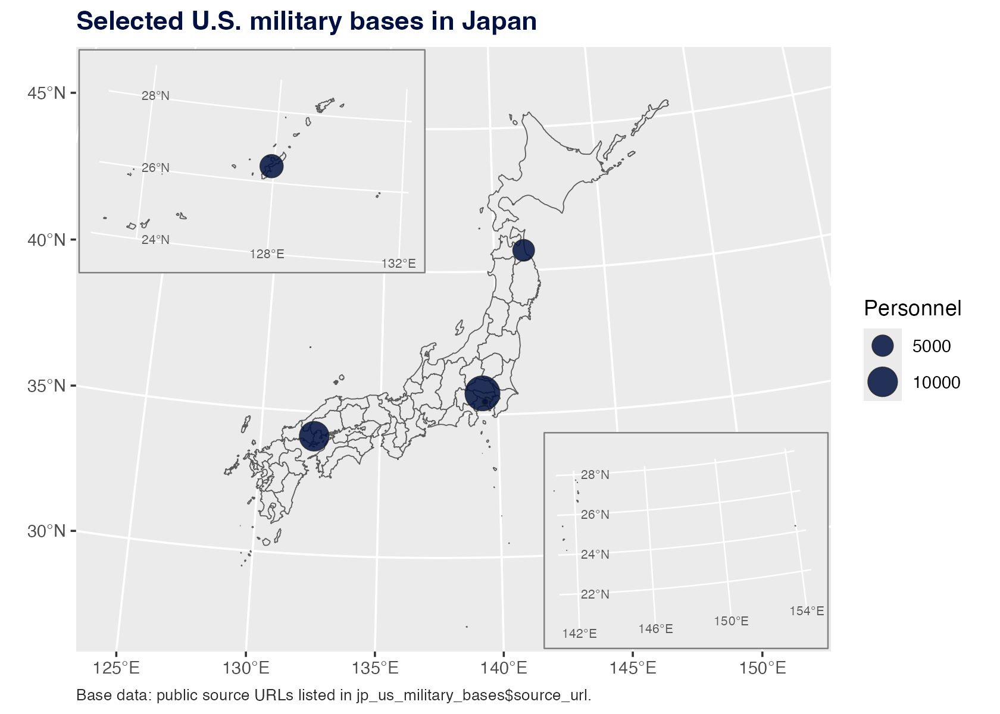

This example uses jp_us_military_bases. The map uses one
point variable: personnel. To keep the example simple, it
uses rows marked as base-specific public personnel figures.
library(tidyverse)
library(jpmap)
bases_xy <- jp_us_military_bases |>
filter(!is.na(personnel), personnel_is_base_specific) |>
jpmap_transform(output_names = c("x", "y"))
plot_jpmap(
"prefecture",
fill = "grey92",
color = "grey35",
linewidth = 0.25
) +
geom_point(
data = bases_xy,
aes(x = x, y = y, size = personnel),
shape = 21,
fill = "#001040",
color = "grey15",
alpha = 0.85,
stroke = 0.35
) +
scale_size_area(max_size = 8, name = "Personnel") +
labs(
title = "Selected U.S. military bases in Japan",
caption = "Base data: public source URLs listed in jp_us_military_bases$source_url."
) +
theme(
legend.background = element_rect(fill = "white", color = NA),
plot.title = element_text(face = "bold", color = "#001040"),
plot.caption = element_text(color = "#2C2A29", hjust = 0, size = 8)
)
The prefectures are only geographic context here. The only mapped
data variable is the point size for personnel.